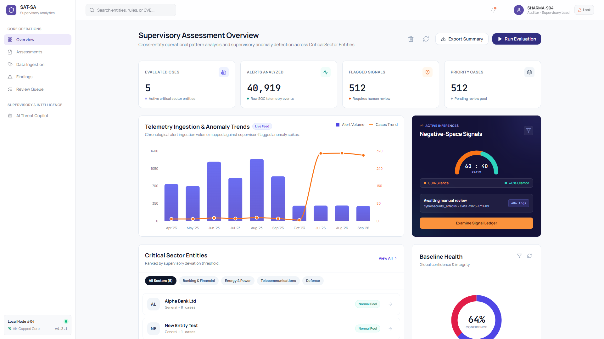
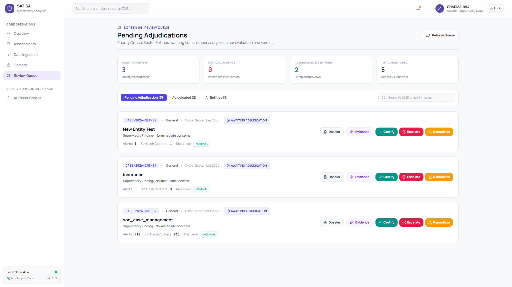
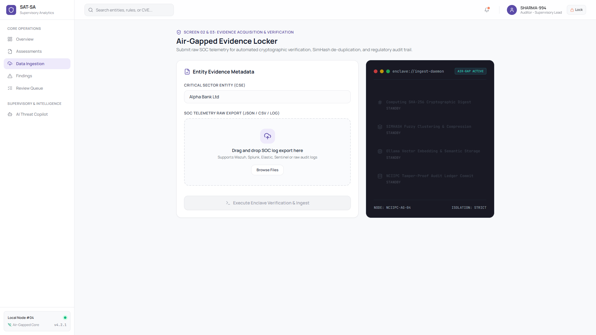
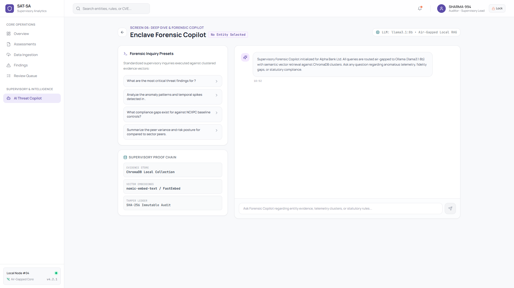
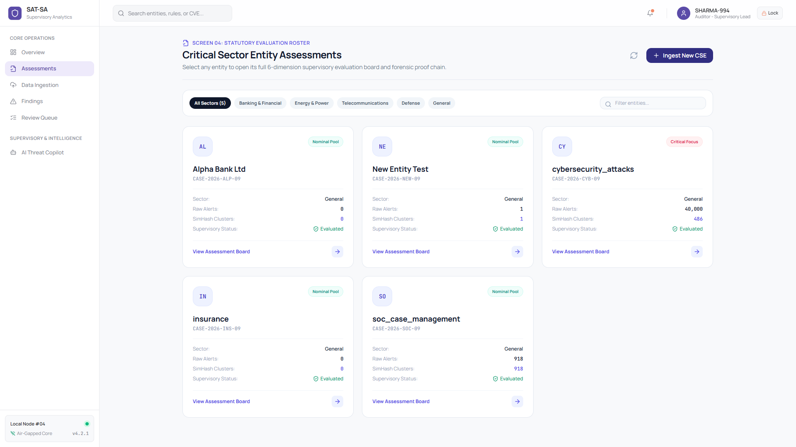

Power grids, telecom backbones, and core banking institutions handle millions of cyber events every day. But who audits the SOC?

Aggregated alerts across Banking, Energy, Telecom, and Defense sectors.
Drowned in volume, tier-1 analysts prematurely close incident tickets without inspecting payload indicators.

heterogeneous logs from Cisco, Fortinet, and Splunk are normalized, verified with SHA-256 ledger integrity, and clustered with 64-bit structural SimHash to completely eliminate analyst fatigue.


Audits the negative space between raw telemetry and closed tickets. Identifies SOP violations, uninspected exfiltrations, and premature ticket closures in milliseconds.
